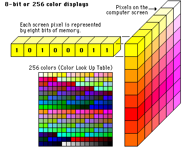
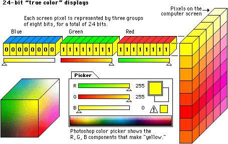

In preparing images for Web use there are a number of important considerations. These are:
There are currently 3 image file formats supported by Web browsers. These are:
There are also a number of image formats which require a browser plugin. These include:
(and now HTML5 has support for inline SVG)
Computers save images in one of two ways:
GIF, JPEG and PNG are all bitmap image file formats. However, they differ in the amount of information (bits) used to save each of the pixels that make up the image. The more information available for each pixel the larger the number of colours available to the image; this is the colour depth.


The size of an image file is determined by the number of pixels in the bitmap (the image dimensions) and the number of bits used to save each of those pixels (the colour depth). Therefore:
The unit of measurement in Web design is the pixel. The pixel dimensions of an image will determine its size on screen. Resolution (pixels per inch) is irrelevant to a Web browser. A Web browser will display an image at its pixel dimensions whether it's 72ppi or 300ppi.
The pixel per inch resolution of most monitors is 72. There's rough guide to the pixel dimensions of monitors in current use here.
There are now a number of online image editing applications. These include: